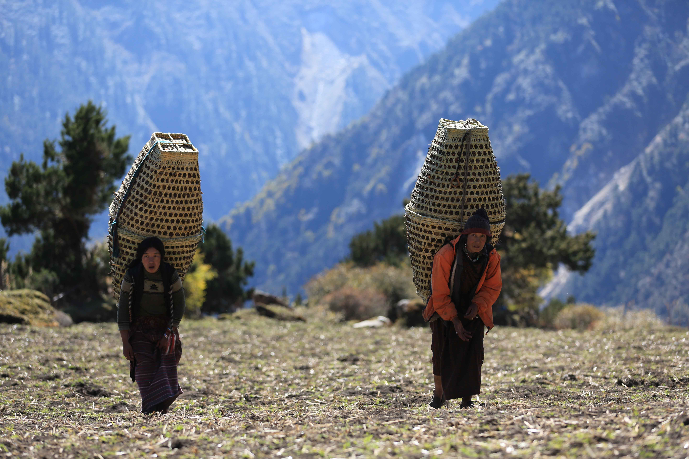

© gomoadventures.com
The Colours of Autumn
Trip Overview
Bhutan Photography Tour
September is the perfect time to witness the breathtaking display of golden rice fields, blooming flowers, and clear blue skies, captivating both visitors and farmers alike. With harvesting activities in full swing, this season is full of fun and excitement. But that’s not all! September is also the month of the largest Bhutanese festivals, including Wangdue, Thimphu, and Haa Valley. These festivals offer a unique spiritual experience for the Bhutanese people and a one-of-a-kind opportunity for photographers to capture stunning moments.
To make your experience even more unforgettable, we will arrange for you to witness the sunrise at Dochula Pass and the sunset at the iconic Tiger’s Nest Monastery, with stunning views of the Himalayan mountains of Bhutan from Chelila, the highest motor road pass. Don’t miss out on this incredible opportunity to capture the magic of autumn in Bhutan.

Trip Highlights
- Colorful festival, rural culture and authentic food of the Haa valley
- Photography of farmers harvesting rice and golden rice fields with typical Bhutanese farmhouses
- Offering tea and snacks to nuns and monks, and a tea and prayer ritual with monks
- Morning breakfast or coffee with a Himalayan mountain view at Dochula Pass
- Evening photographs of Punakha and Wangdue Phodrang Dzong
- Hiking to iconic monasteries and temples, and many more
Itinerary
Day 1 Paro / Haa
Arrive in Paro and drive to Haa via Chelila Pass (3,988m). In the afternoon, a short hike around the ring road of Haa town, with dinner at the hotel.
Day 2 Haa
After breakfast, drive to the Haa annual festival, held once a year at one of the oldest temples in Bhutan. In the afternoon, hike around a rural village and visit a temple on the hilltop. Authentic lunch of buckwheat dumplings, called hoentay.
Day 3 Thimphu
After breakfast, drive to Thimphu. It’s a scenic drive and we can stop on the way to photograph people, authentic Bhutanese houses and more. After checking in to the hotel, we will join evening tea and prayer at Dechen Phodrang Central Monastic School.
Day 4 Thimphu
Visit the tallest Buddha and hike to Dodedrak Buddhist Institute in the mountains. In the evening, a short hike on the Wangditse loop before dinner.
Day 5 Thimphu
In the morning, visit the tallest Buddha, the archery field and Kaja Throm (the vegetable market). In the afternoon, visit Dechen Phodrang monastic school for photography and a tea offering to the little monks, and attend evening prayers.
Day 6 Punakha
Morning drive to Punakha via Dochula Pass for morning coffee and photography, followed by breakfast with Himalayan mountain views. Continue to Lobesa and hike to Chimi Lhakhang through the rice fields. Evening photoshoot at Punakha Dzong.
Day 7 Punakha
After breakfast, visit Wolakha Nunnery and Punakha Dzong for photography and a cultural experience. Picnic lunch by the river, and in the afternoon photograph farmers harvesting rice and hike to the stunning Khamsum Yuelay Chorten for evening photographs.
Day 8 Wangdue
After breakfast, drive to the longest suspension bridge and then to Samdingkha, an area for better photography of the village and rice fields. In the afternoon, drive to Wangdue and visit Wangdue Phodrang Dzong for evening photography.
Day 9 Phobjikha
After breakfast, drive to the Phobjikha valley via Sha Ngawang and Nobding. In the afternoon, take a nature hike in the Phobjikha valley and visit Gangtey Monastery and village.
Day 10 Paro
After breakfast, drive back to Paro. On arrival, visit Paro Dzong and take evening photographs of Paro Dzong with the bridge.
Day 11 Paro / Tiger’s Nest
In the morning, photograph Dzongdrakha Monastery on the cliff, then hike to Tiger’s Nest Monastery.
Day 12 Departure
Departure to Bangkok, Delhi, Dhaka, Kathmandu or Singapore.